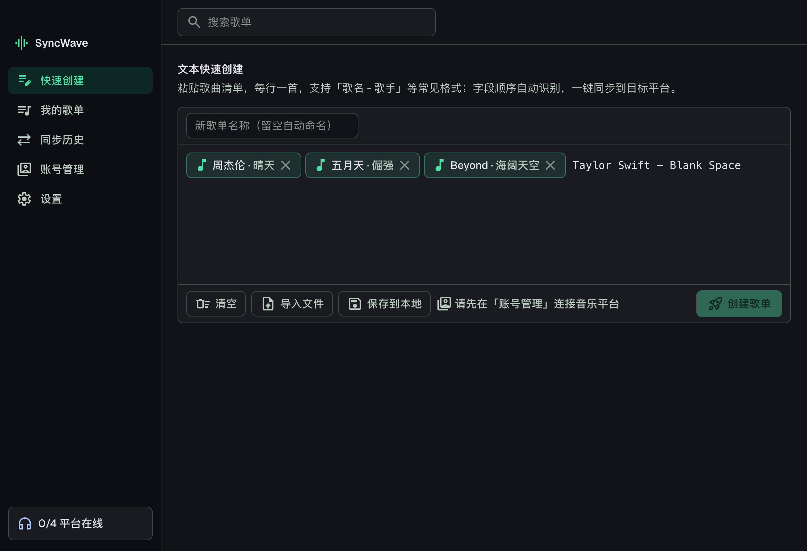

粘贴即建单
歌名 - 歌手、分享文本、m3u / csv / txt / lrc / json 文件，自动探测格式并解析，逐条预览、可编辑。
粘贴一段文本就能建好歌单，在网易云音乐、QQ 音乐、酷狗音乐与 Apple Music 之间智能匹配、一键同步。 数据留在本地，凭证安心加密。
支持 Windows 10+ · macOS 11+ · Linux（AppImage）

 Apple Music
Apple Music
从一段文本到一个完整歌单，从一个平台到另一个平台，流程尽量只保留「确认」这一步。
歌名 - 歌手、分享文本、m3u / csv / txt / lrc / json 文件，自动探测格式并解析，逐条预览、可编辑。
四个平台均可作为来源与目标，多选来源歌单，增量写入目标平台，差异先预览再执行。
标题 + 歌手归一化精确相等自动选定；同歌不同作者进入候选面板由你裁决，匹配结果缓存复用。
创建、重命名、删除歌单，增删歌曲；本地歌单库无需登录，导入导出 m3u / csv，添加歌曲可平台搜索。
受控并发与限流冷却避免触发风控；同步进度、逐首明细与失败原因持久保存，随时停止或跳过。
歌单数据默认不上传云端；凭证经 Electron safeStorage 系统级加密，日志全量脱敏。
不需要懂格式、不需要手动对齐两首歌，也不需要在平台之间来回复制粘贴。
粘贴歌名列表、歌词、聊天记录或平台分享文本，也可以直接导入文件、从已登录账号拉取歌单。
自动探测格式、辨别字段顺序，再到目标平台搜索验证。拿不准的同名歌曲会列成候选，由你点选。
选择目标平台与歌单，查看待新增 / 已存在 / 待删除 / 未匹配清单后执行。进度实时可见，结果有完整报告。
网易云音乐、QQ 音乐、酷狗音乐与 Apple Music 都支持读取与写入，账号可同时登录、独立管理。
拉取自有歌单与歌曲，支持建单、改名、删除与增删曲目。
App / 微信 / 手机 QQ 三通道扫码，支持歌单读写与批量加歌。
仅展示自建与系统歌单；登录凭证与设备指纹绑定，请勿随意删除本地指纹文件。
支持建单、加曲与改名；官方 API 未提供移除歌曲端点，该操作不可用。
同步仅操作你自己账号下的歌单元数据，不绕过平台版权限制。
安装包由 GitHub Releases 提供，应用内可检查更新。选择对应平台即可开始。
macOS 与 Windows 安装包未签名：macOS 若被拦截，右键安装包选择「打开」；Windows 提示 SmartScreen 时选择「更多信息」→「仍要运行」。 查看版本记录
不会。歌单与匹配映射保存在本地 SQLite；登录凭证经 Electron safeStorage 使用系统级加密落盘，仅主进程读写，日志中的敏感信息会被递归脱敏。
标题 + 歌手归一化精确相等会自动选定；同歌不同作者会进入候选确认面板由你选择。匹配阈值可在设置中按宽松 / 平衡 / 严格预设调整，人工确认的结果会缓存下来优先复用。
可以。支持 m3u、csv、txt、lrc、json 文件导入，也能粘贴平台分享文本；已登录账号的歌单可直接拉取。导出支持 m3u 与 csv。
Apple Music 官方 API 没有提供从歌单移除曲目的端点，因此应用内不展示该操作。建单、加曲与改名都可以正常使用，写入会按平台限制分批进行。
应用内「检查更新」以 GitHub Releases 为唯一更新源；也可以直接到 releases 页面下载最新版本。已发布版本不覆盖重发，回滚需发布更高版本。